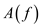
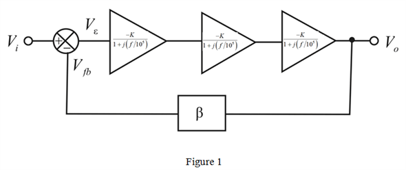
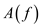
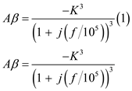
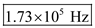
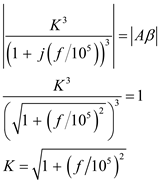
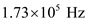
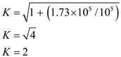

For a feedback amplifier for which the open-loop transfer function of single stage is,
The overall open-loop transfer function  for Feedback amplifier shown in Figure 1 is,

Consider the three stage amplifier circuit shown in Figure 1.

For a feedback amplifier for which the open-loop transfer function of single stage is,
The overall open-loop transfer function  for Feedback amplifier shown in Figure 1 is,
Consider the feedback factor,  as
as 
The loop gain is.

The phase of the loop gain is,

Find the frequency at which the phase margin is equal to  .
.
Thus, the frequency of oscillation is .
At this frequency the loop gain magnitude is unity.

Substitute  for .

Thus, the minimum value of  at which the circuit oscillates is
at which the circuit oscillates is  .
.